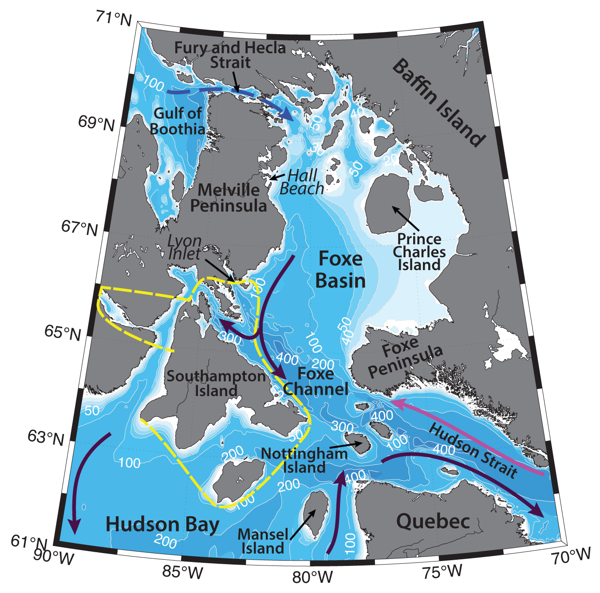

Schematic water circulation patterns and geographical place names in the Southampton Island region. Adopted from Straneo and Saucier (2008), Defossez et al. (2010), Macdonald and Kuzyk (2011). Dashed yellow line marks the studied region.
Southampton Island is an island situated between Hudson Bay and Foxe Basin in the northeastern Canada. The Hudson Bay system includes Hudson Bay, James Bay, Foxe Basin and Hudson Strait (Macdonald and Kuzyk, 2011); the latter connects the system to the Labrador Sea; Foxe Basin and Fury and Hecla Strait connect the Hudson Bay with the Arctic Ocean. Foxe Channel is situated in the southern part of the Foxe Basin along the northern coast of Southampton Island; it is a straight channel approximately 400 km long and 100 km wide, with a maximum depth of 450 m (Defossez et al., 2010). Depth, ice coverage and stratification of the Basin, the Bay and the Strait differs, hence influencing the differences in hydrography of the region (Ferland et al., 2011).
Hydrography of the Hudson Bay system is determined by freshwater runoff into the bay, inflow of the Arctic waters, atmospheric forcing, sea-ice, flaw leads, polynyas, local formation of intermediate and deep waters, tides; and is rather sensitive to changes in the forcing (e.g. human manipulation of the landscape – hydropower development, climate change; Macdonald and Kuzyk, 2011).
Hudson Bay and Foxe Basin are rather shallow (mean depth of ~125 m and ~90 m respectively), but large saltwater bays, which are considered to be a marginal sea of the Arctic Ocean. Hudson Bay has a shelf-like marine environment and is strongly affected by the inflow of fresh water and terrigene matter from land. It is completely ice-covered during wintertime (~from December to May) with occasional ice leads along the western coast of Hudson Bay and around the Belcher Islands (e.g. Ferland et al., 2011). During the peak of winter ice thickness can reach up to 1 – 2 m according to measurements near the coast (St-Laurent et al., 2011; Macdonald and Kuzyk, 2011). The ice cover starts to break up from May to mid-August from the eastern and western areas of Hudson Bay, and by August the ice usually remains only in the southeastern area of Hudson Bay, in Foxe Basin and around Southampton Island (Ferland et al., 2011).
Foxe Basin is ice-covered during most months of the year, with average ice thickness reaching ~2–4 m (Granskog et al., 2011), and is rarely completely ice-free. Open pack ice is common throughout the summer. Strong tides and winds induce ice movements and open numerous polynyas and leads, mostly in the western part of the basin (e.g. Ferland et al., 2011). Eastern Foxe Basin is known as an ice accumulation area, with ice thicknesses frequently greater than 3 m and melting that occurs late in summer (Sibert et al., 2010).
Significant ice movements can be induced by tides, which are strongest in the Hudson Strait and southeastern Foxe Basin (velocities can reach 1 m/s and the M2 tidal range can reach ~4–5 m in these locations), and weakest in the northern part of the Foxe Basin (less than 1 m range), where landfast ice is present (e.g. St-Laurent et al., 2008).
Three polynyas are known to be commonly formed in the Foxe Basin: at Hall Beach, along Melville Peninsula and at Lyon Inlet (e.g. Defossez et al., 2008, 2010). During wintertime cooling, brine rejection and subsequent convective overturning of the water column, dense waters are being formed in these polynyas. This newly formed cold and saline dense deep water of the Foxe Basin further proceeds southwards towards Foxe Channel as a gravity current. Defossez with coauthors (2008) have observed, that this current renews more than 2/3rd of the deep waters of Foxe Channel each year. They note, that these dense waters can probably overflow the sill at 180 m between Southampton Island and Nottingham Island, thus allowing Foxe Basin’s dense waters to enter Hudson Bay. The deep waters of the Foxe Basin are known to be rich in nutrients and provide favorable conditions for marine life. Foxe Basin’s western polynyas also produce large amounts of sea-ice (Defossez et al., 2010).
Defossez with coauthors (2010) suggest, that warming in the atmosphere and changes in winds (especially due to the global climate change) can weaken dense water production in the Foxe Basin, and consequently alter general circulation in the whole Hudson Bay system, which would probably have an impact on the biology at the bottom of Foxe Channel as well, since the ventilation by cold and oxygen rich waters would be lessened.
Foxe Basin transmits fresh water originating in the Arctic Ocean and entering the basin through the Fury and Hecla Strait into Northern Hudson Bay. Mean surface temperatures in the Foxe Basin was reported to be 2.7±0.2 ºC, and surface salinites ~31±0.8 (Ferland et al., 2011). In the Northern Hudson Bay, the freshwater gets entrained into the cyclonic coastal current, carrying river runoff around the Hudson Bay (Prinsenberg, 1988).
Hudson Bay receives approximately 760 ±48 km3 of river discharge annually (accounting for one-third of Canada's watershed; e.g. Prinsenberg, 1988; Granskog et al., 2011), from the rivers of Chesterfield Inlet (Kazan, Thelon and Dubawnt); Hayes, Nelson and Churchill rivers in the west; the Winisk and Severnin the southwest; the Grande, Eastmain, Nottaway, Moose and Abitibi, Albany, Attawapiskat and Nastapoca, flowing into James Bay (which receives more than half the system's river input); and others. Such volume of river runoff can result in ~1 m sea level rise in the bay, which builds up strong year-round stratification. For comparison, the annual yield from sea-ice formation and melt cycle reaches ~1.5 m (Macdonald and Kuzyk, 2011). During summer/early fall this fresh water forms a shallow (30–60 m deep) surface mixed layer. Granskog with coauthors (2011) showed, that most of the RW remains nearshore in summer, with limited exchange with the interior of the Bay. Surface freshening in the offshore, on the other hand, is largely controlled by sea-ice melt on both seasonal and longer time scales.
Underneath the surface fresh water mass there is a cold subsurface water, indicative of the previous winter's surface mixed layer. Wintertime cooling and ice formation is accompanied by brine rejection, which further forms the dense brine-enriched water; isotopic data indicate that a portion of the river runoff is mixed into these deep waters too (e.g. Macdonald and Kuzyk, 2011). Granskog with coauthors (2011) have calculated, that 6–16% of the annual river discharge is transformed into deeper waters each winter. Due to the high buoyancy of the surface freshwater, deep winter water formation happens locally in small areas across the bay, usually associated with flaw leads extending around the perimeter of the landfast ice edge (e.g. along the western coast). Without the deep convection the winter surface mixed layer (with temperatures near the freezing point) extends down to ~ 60–100 m. Winter surface mixed layer often survive locally below the summer surface mixed layer (Granskog et al. 2011). Granskog with coauthors (2011) describe a net accumulation of brine in the system, while ice melt products are transported away by fall freezeup. Neither sea ice nor runoff is in steady state in the Hudson Bay over the annual cycle.
River runoff into the Hudson Bay gets entrained into the strong (5 cm/s; Prinsenberg, 1988) cyclonic surface coastal current, and is generally confined to the shore during summertime. This boundary current transports riverine water out of the Hudson Bay (Macdonald and Kuzyk, 2011; Granskog et al., 2011). Eddies, embedded in the mean flow along the southern coast of the Hudson Strait facilitate the process. In late fall and winter, the strong boundary circulation slows down partly due to a decrease in river water input and partly due to the withdrawal of freshwater by ice formation both of which reduce estuarine forcing (Granskog et al., 2011). The deep waters flow in the same direction but much more slowly (Ferland et al., 2011). The residence time of the waters in the interior Hudson Bay is rather large – water renews in about 5 years, which leads to rather oligotrophic conditions.
Distribution of freshwater across the Bay has a significant impact on the biogeochemical cycles of the basin, including primary production, which relies on vertical exchanges with nutrient-rich deep waters (e.g., Macdonald and Kuzyk, 2011). St-Laurent with coauthors (2011) have found, that wind forcing can substantially influence a seasonal advection of the river waters, hence modify the density field offshore and advect various tracers, such as mercury or organic matter, which, in turn, can have potential implications for marine life.
Seawater inflow happens into the Hudson Bay both through the Foxe Basin, that transmits water originating in the Arctic Ocean, and the Hudson Strait. Hudson Strait, a narrow (~100 km) and long (~400 km) channel is deeper (mean depth of ~300 m), compared to the Hudson Bay and Foxe Basins. Hydrography of the strait is characterized by an inflow of relatively warm and salty North Atlantic waters (-0.5 ºC<T<1 ºC, S~33) into the Hudson Bay along the northern shore of the Strait – along Baffin Island, by an outflow along the southern (Quebec) coast of the strait that carries fresh waters (S<33) into the Labrador Sea out of the estuarine system (e.g. LeBlond et al., 1981), by a saltier and cold (at freezing point) water mass, located above the 100–150m isobath, and by enhanced mixing in the strait, especially due to tides. The amplitudes of mostly semidiurnal tides at the mouth of Hudson Strait can reach ~ 8 m and the speeds ~ 3 m/s (Sutcliffe et al., 1983). Strong mixing affects vertical stratification of the water column, surface nutrient concentrations (supply of nutrients from deep waters), and biological production processes in the area. Ferland with coauthors (2011) demonstrated that the waters of Hudson Strait in summer were much more productive than, e.g., those of northern Hudson Bay and southern Foxe Basin. Ferland with coauthors (2011) suggested that the Hudson Bay system during the summer to late-summer period likely supports a pelagic dominated food web.
Ultimately, the export of freshwater from the Hudson Bay system through Hudson Strait contributes significantly to the freshwater flow to the Labrador Shelf and possibly to the interior of the Labrador Sea, with downstream effects on stratification, water mass properties, variability, and productivity in those regions (Ferland et al., 2011).